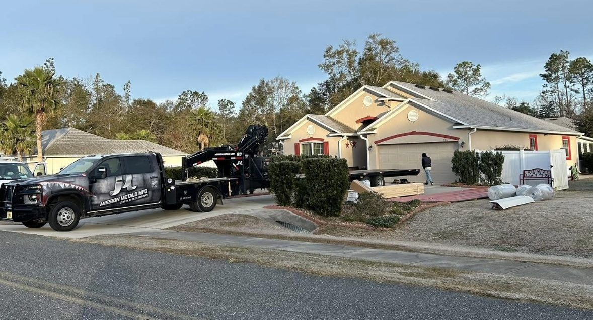

Whether you live near downtown Lake City, out toward Fort White, or along the US-90 and I-75 corridor, we supply the metal roofing and connect you with an independent Columbia County-area roofer who installs it.
Lake City sits where I-75 meets I-10 and US-90, and it serves as the county seat of Columbia County. That location brings a wide range of buildings: neighborhood homes close to Lake DeSoto and the downtown district, newer subdivisions on the edges of town, small commercial and roadside buildings, and rural homesteads with barns and shops in the countryside toward Olustee and the Ichetucknee area.
Metal roofing fits that variety well. Mission Metals Manufacturing produces 5V crimp, PBR and standing seam metal roofing at our Florida plant, along with matching trim. Instead of selling you a roof job, we hand your project to an independent, licensed installer who works in and around Lake City and builds with our materials.
Installers we refer are independent licensed Florida roofing contractors. Inspection, quote, contract and installation are between you and the installer.
North Florida's afternoon thunderstorms drop a lot of water fast. Metal roofing sheds it quickly off the slope.
Installed to the Florida Building Code with the right fastener pattern, metal roofing is engineered to resist uplift.
Lighter colors send back much of the afternoon heat, which can help keep upstairs rooms and attics more comfortable.
Use one color and trim across a house, detached garage, carport or pole barn.
Who issues the permit: Properties inside city limits typically go through the City of Lake City, while unincorporated addresses generally go through Columbia County. Your installer should confirm and handle the paperwork.
Code requirements: A reroof needs to meet Florida Building Code wind provisions. The installer selects underlayment, fasteners and edge details based on the building and its exposure.
Older homes: Some houses near the historic downtown have older decking or multiple shingle layers. Ask your installer to check the deck before quoting a metal roof.

Copper-tone standing seam, installed by a licensed contractor with our panels.

Materials delivered to the job site for the licensed contractor installing in the Lake City area.

House and outbuilding matched in green — a popular choice on Columbia County acreage.
Real Mission Metals photos. Mission Metals manufactures and supplies the metal roofing; roofs are installed by independent licensed contractors. Homes shown are in Florida and not necessarily in Lake City.
No. We are the manufacturer. A licensed, independent roofer serving Lake City installs the metal roofing and contracts with you directly.
Addresses inside Lake City limits go through the City of Lake City's building department; the rest of Columbia County, including Fort White and Five Points, goes through Columbia County Building and Zoning. Your installer confirms the office and pulls the permit.
Sometimes, depending on the decking, the number of existing layers and the Florida Building Code. Your installer will inspect the roof and tell you whether a tear-off is needed.
Columbia County gets frequent summer downpours and lightning. Metal roofing sheds heavy rain fast, and it is not more likely to attract lightning than other roofing. Your installer can size gutters for the runoff.
Tropical systems crossing the Big Bend can bring gusty winds well inland to Lake City. Installed to the Florida Building Code fastening requirements, metal roofing is engineered to resist uplift.
Shaded, wooded lots in southern Columbia County stay damp. Metal roofing doesn't hold moisture like shingles and helps reduce moss and algae buildup.
Search the contractor's name or license number at myfloridalicense.com. Every installer we refer holds an active Florida roofing license.
All of Columbia County, including Fort White, Five Points, Olustee, Watertown and the Wellborn area, plus nearby towns along US-90 and US-441.
How metal roofs handle Columbia County wind, rain and lightning, and what to ask your installer.
Profile, gauge, tear-off, roof shape and access: the factors behind a local quote.
Call once and we'll line you up with a licensed installer near you who uses Mission Metals metal roofing.